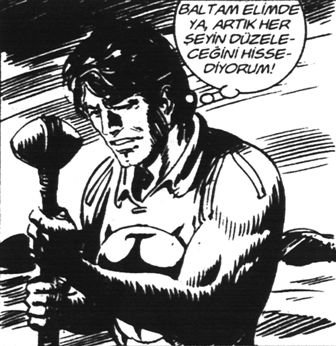

Cumartesi öğleden sonra, Alilerde buluştular. Ali’nin çocukları Müge ve Orhan’la Nisan iyi anlaşıyordu. Ali’nin eşi Şefkat’le de eşi iyi anlaşıyordu.
Ali’yle Hıdır da, Ali’nin babası Orhan Amca’dan miras kalan tek katlı evin arka bahçesindeki küçük barakada vakit geçirmeyi çok seviyorlardı.
– Nasıl geçti Genel Müdür Yardımcısı’yla görüşme?
– Sonra anlatırım ağabey. Ali oğlum, burası seri katillerin sapık işkence odalarına benziyor.
Kık kık güldüler.
– Harbiden abi.
Duvarlar gazete kupürleriyle doluydu. İçerideki raflarsa birçok çizgi romanla. Teksas, Tommiks, Kızılmaske, Mandrake...
– Bak bu Killing serilerini Avrupa’da 5-6 bin euro civarında satıyorlar.
– Hadi ya, satsana.
– Hayatta olmaz, benim gençliğim onlar.
– Ağabey, sen bu kadar efendi adamsın, bu Killing hayatta verdiği sözü tutmaz, çatır çutur milleti öldürür. Kadın kız düşkünü berbat bir tip.
– Adam 60’larda 2000’li yılların insanını görmüş.
– Ağabey bu gazete kupürleri ne? Tüm duvarlar bunlarla kaplı.
– Bunlar propagandayla ilgili olduğunu düşünüp gazetelerden kestiğim haberler.
– Nasıl?
– Bak mesela şu habere.
– Şu Filistinli baba ve çocuğun ölümü mü? TV’de izlemiştim. Gaz bidonunun arkasında öldürdüler, kamerayı görmedikleri için. Kamerayı görseler öldürmezlerdi. Nedir ilginç olan?
– Bak İntifada’da o ana kadar 103 kişi ölmüş. Bunun 101’i Filistinli, 2’si İsrailli.
Bu çocuk ve baba görüntülerde bir gaz bidonunun arkasında saklandılar ve tek taraftan korunuyorlar. Ateşin o taraftan geldiği belli. Kamera ara sokaktan çekim yapıyor, tam karşılarından. Baba ve oğul arkalarına hiç bakmıyor. Teneke bidon bir süre sonra onları korumamaya başladı. Baba çocuğuna sarıldı, önce babayı öldürdüler sonra çocuğu.
– Ağabey bunlar oluyor biliyoruz.
– Bütün dünya görüntüleri şöyle izledi. Bak, gazete haberine: “İki ateş arasında kaldılar!” Görüyor musun? O ana kadar 103 kişi ölmüş, 101’i Filistinli. Ateş tek taraftan geliyor. Manşet: “İki ateş arasında kaldılar!” % 50 - % 50 suç dağıldı. Gerçek haberde doğabilecek tepkiyi düşünsene.
– Ben seyrettiğimde ağlamıştım.
– Ben de yavaş yavaş öldüklerini gördüğümde, babanın sarılışını gördüğümde ağladım. Ama kimin vurduğu nasıl da belli değil (!) di mi?
– Bu haber?
– Bak, bizim tüm gazetelerde iç sayfada çıktı. Sabra ve Şatilla’da 1984’te Filistinli gerillalar Hristiyan Falanjistler ve İsrail birlikleriyle çatışıyorlar. Sonunda şöyle bir anlaşma imzalanıyor. Gerillalar, Sabra ve Şatilla kamplarını silahlarıyla terk edecekler. Eşlerini ve çocuklarını kampta bırakacaklar. Kimse kimseye dokunmayacak. Filistinli gerillalar gemilerle ayrıldıktan sonra, Hristiyan Falanjistler kampa girdiler ve çocuklarla kadınları öldürdüler.
– ...
– ...
– Ağabey kaç kişi? Yüz falan mı?
– 2000 kadın ve çocuk. Bir tane erkek yoktu kampta.
– Ağabey niye hiç duymadık bunu?
– Ben sana işin ilginç tarafını söyleyeyim. Daha sonra telsiz konuşmalarına şahit olanlar katliam emrini Hristiyan Falanjistlerin liderine o günkü İsrail Savunma Bakanı’nın verdiğini söylediler. Kim biliyor musun?
– Kim?
– Ariel Şaron!
– Hadi yaa!
– Lahey Adalet Divanı’nda dava açıldı. Katliam emrini Şaron’un verdiğini ispatlayabilecek tek şahit Hristiyan Falanjistlerin lideriydi. Adam hiç konuşmadı, ta ki davanın düşmesine 5 ay kalana kadar. 20 yılın sonunda suç geçerliliğini yitiriyor çünkü. Suçun düşmesine beş ay kala adam, emri Ariel Şaron’un verdiğini mahkemede açıklayacağını söyledi.
– Hadi ya? Film gibi oğlum.
– Şaron kesin mahkûm edilecekti, şahitlik yapmasına iki ay kala adamı öldürdüler.
– Eee artık kimin öldürdüğü belli.
– Bak bakalım habere, gazetelerimizde nasıl çıkmış iç sayfalarda.
“Filistinlilerin intikamı!”
– Adamı 20 yıl öldürmüyorlar, Ariel Şaron’u mahkûm ettirmesine iki ay kala mı öçlerini alacaklar. Bekler, şahitlikten sonra öldürür.
– İşte abi, bu tüm dünya basınında böyle çıktı.
– Nasıl yapıyorlar bunu?
– Hem kendi içinde dünya haber ağını yönlendirecek bir birimleri olmalı hem de tüm basın organlarını yönetebiliyor olmalılar!
– Ağabey ihtimal var mı böyle bir şeye?
– Bence var.
– Peki, bizim niye haberimiz olmuyor bunlardan?
– Ne seyrediyorsun televizyonlarda?
– ?
– Caner, Tülin’i düdükledi mi? Ata, şehit mi gazi mi? Haberlerde bir şey dikkatini çekti mi?
– Ne?
– Aynı haberi üç-dört defa tekrarlıyorlar. Görüntüyü, metni üç-dört defa.
– Harbiden bir kere söylese anlarsın. Eskiden öyleydi.
– Beynimizi uyuşturuyorlar, küçük çocukların anlama eşiğini aşağı düşürüyorlar. Biz Mehmet Ali’yi seyrederken, onlar dünyayı yönetiyorlar.
– Ağabey, korku filmi gibi korkunç.
– Şahinleri eğitirken önce gözlerini diker ve aç bırakırlar. İsyankâr hayvan boyun eğmeye başlar, sonra istediklerini yaptırırlar.
– ...
– Bence gözlerimizi diktiler, sıra aç bırakmaya geldi. Aç bırakmayı yemek anlamında söylemiyorum.
– ...
– ...
– Filmi koysana.
– Tamamdır.
– Vay be Killing İstanbul’da. Bizimkiler çekmiş ha?
– Evet, Uçan Adama karşı.
– Uçan Adam Türk mü?
– Halis muhlis. Yalnız amcam film boyunca uçmuyor, biz onun uçtuğunu konuşmalardan anlıyoruz. “Uçan Adam gene uçtu” gibi. Adamı hep konmuş hâliyle çekmişler. Kik kik.
– Ya bir ara Süpermen İstanbul’da filmini seyrettim. Aynen şöyle bir diyalog var. Süpermen kıza:
“Nevzat abiye haber ver, ben babamı kurtarmaya gidiyorum” diyor.
– Yuh, kik kik.
– Sonra da dönüyor kıza, “Kripton diye bir taş var, benim bütün gücümü bitiriyor” diyor. Hadi koy seyredelim.
– Çocukları çağıralım mı?
– Ya boş ver! Bizim kız on dört yaşında, İbrahim Hakkı Hazretlerinin Marifetnamesi’ni okuyor. Seyretmez o şimdi.
– Keyfine bak, başladı.
– Killing tabuttan mı diriliyo!
– Hıı.
– Yuhh.
“Ama bu mükemmel bir dünya ve senin mükemmel bir yaşamın var. Gününü kontrol altına alabilecek güce sahipsin. Düşlerini gerçekleştirebilecek güç elinde!” dedi Julian, sesini yükselterek.
“Bunu anlıyorum. Gerçekten değişebileceğimi hissetmeye başladım.”
“Harika. Şimdi gününü değerlendirmeye devam edelim” komutunu verdi.
[...] “Sanırım şimdi Kendin Hakkında Düşünme Ritüeli’nin gücünü anlamaya başladın. Yaptığın şeylere, gününü nasıl geçirdiğine ve zihninden geçen düşüncelere bakarak gelişme düzeyini ölçmek üzere kendine puan verebilirsin.” [10]
